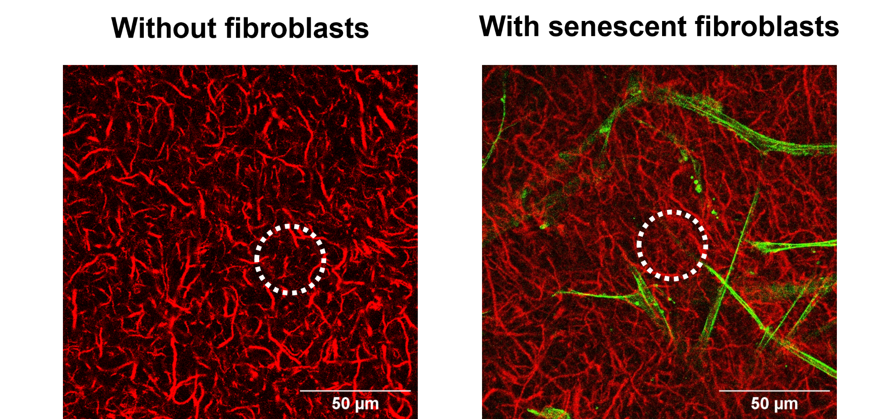
Flow and mechanics in collagen matrices
Remodelling of the collagen matrix (red) by senescent fibroblasts (green).
Open-access article · Physical Review Applied ↗Mechanics · Biofluidics · Living systems
I investigate how pressure, deformation and tissue architecture shape fluid transport in living systems, from porous collagen matrices to engineered microvessels and tumour-on-chip models.
Auto-scrolls · hover or touch to pause · drag or swipe manually

Remodelling of the collagen matrix (red) by senescent fibroblasts (green).
Open-access article · Physical Review Applied ↗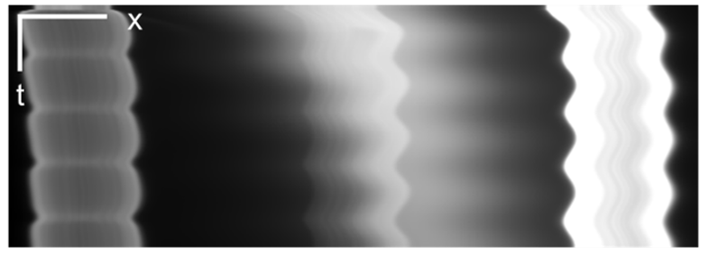
Time-resolved transport driven by oscillatory mechanical forcing.
Read the preprint ↗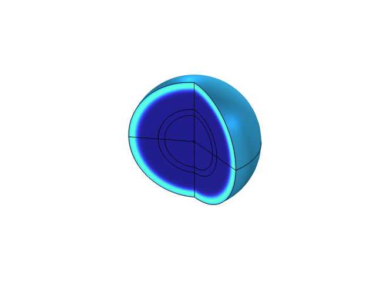
Diffusion and convection in simplified tumour models.
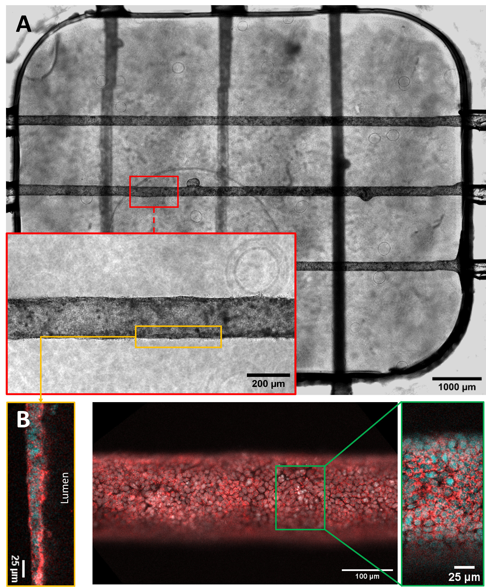
Multilevel epithelial culture in laser-cut PMMA devices embedded in collagen.
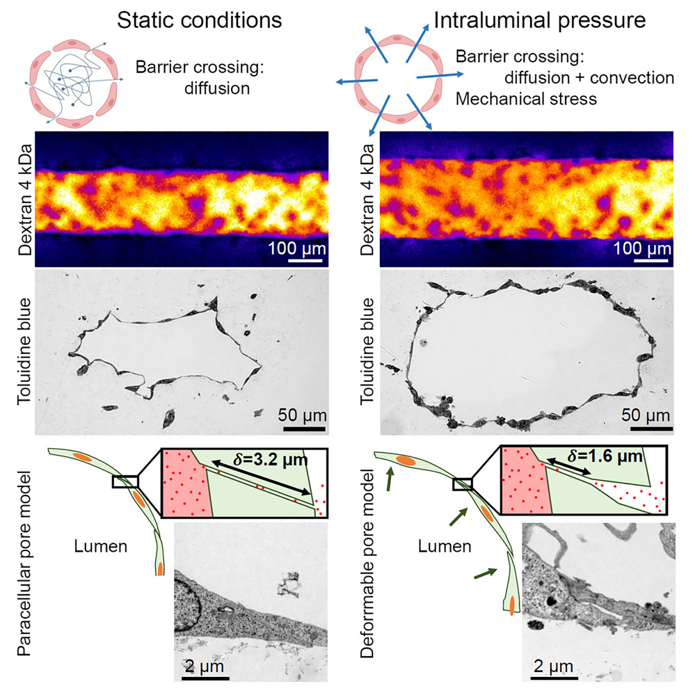
Pressure-dependent barrier transport in engineered microvessels.
Open-access article · iScience ↗Biological tissues are permeated by water, macromolecules, cells and signalling factors. Their transport emerges from the coupling between pressure, deformation, microstructure and active biological processes.
My work combines fluid mechanics, poromechanics, microfabrication, quantitative imaging and biological models to connect tissue organisation with transport function.
How pressure and deformation reorganise transport pathways.
How porous biological matrices store, release and redistribute fluids.
How microscopic transport mechanisms become tissue-scale function.
Daniel Alcaide Martín, Aurélien Bancaud, Jean Cacheux and Yukiko T. Matsunaga · bioRxiv · Preprint
Jean Cacheux, Thomas Quénan, Daniel Alcaide Martín, Jose Ordonez-Miranda, Laurent Jalabert et al. · Physical Review Applied
Aurélien Bancaud, Tadaaki Nakajima, Jun-Ichi Suehiro, Baptiste Alric, Florent Morfoisse et al. · Lab on a Chip
Jean Cacheux, Tadaaki Nakajima, Daniel Alcaide Martín, Takanori Sano, Kotaro Doi et al. · STAR Protocols
Daniel Alcaide Martín, Baptiste Alric, Jean Cacheux, Shizuka Nakano, Kotaro Doi et al. · Biochemical and Biophysical Research Communications
Jean Cacheux, Aurélien Bancaud, Daniel Alcaide Martín, Jun-Ichi Suehiro, Yoshihiro Akimoto et al. · iScience
A cross-institutional team investigating poromechanics and transport in microphysiological systems, with applications to cancer biology and translational research.
PhD Student · LAAS-CNRS
Co-supervised with Aurélien Bancaud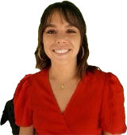
PhD Student · LAAS-CNRS
Co-supervised with Aurélien Bancaud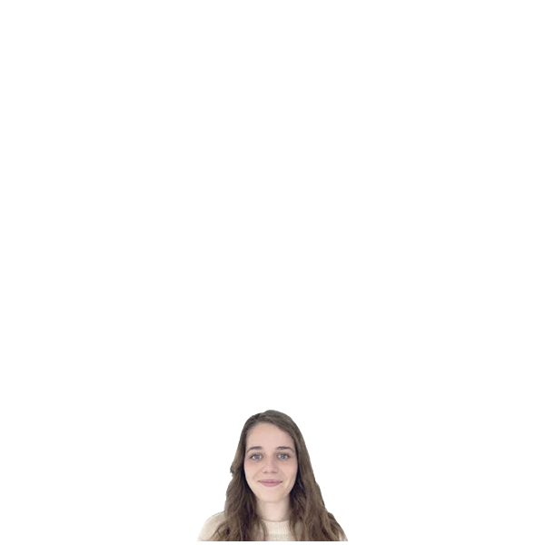
Postdoctoral Researcher · LAAS-CNRS
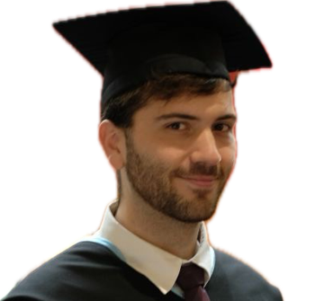
Postdoctoral Researcher · LAAS-CNRS
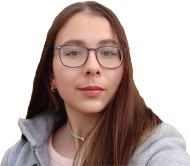
PhD student · CRCT
Co-supervised with Pierre Cordelier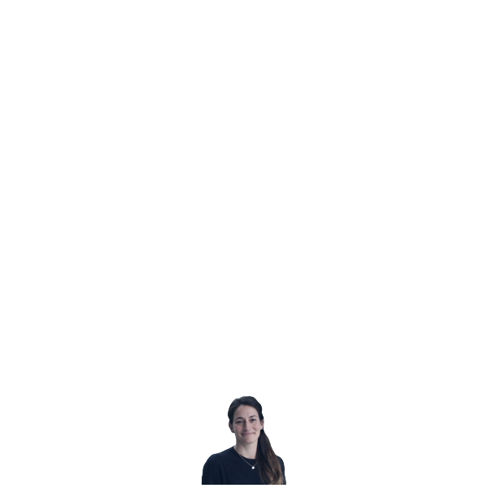
Research Engineer · CRCT
Outside research...
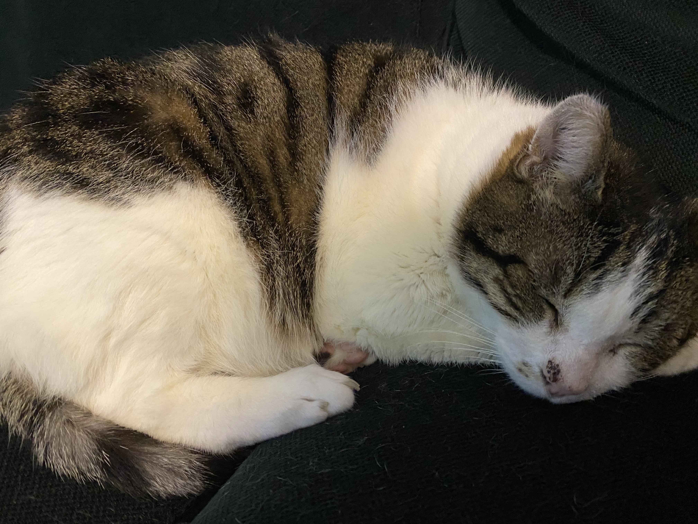